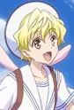
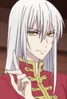
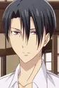
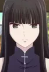
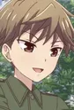
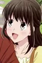
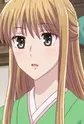

About the anime
Summary
Fruits Basket tells the story of Tohru Honda, an orphan girl who, after meeting Yuki, Kyo, and Shigure Sohma, learns that thirteen members of the Sohma family are possessed by the animals of the Chinese zodiac and are cursed to turn into their animal forms when they are weak, stressed, or when they are embraced by anyone of the opposite sex that is not possessed by a spirit of the zodiac. As the series progresses, Tohru learns of the hardships and pain faced by the afflicted members of the Sohma family, and through her own generous and loving nature, helps heal their emotional wounds. As she learns more about Yuki, Kyo, and the rest of the mysterious Sohma family, Tohru also learns more about herself and how much others care for her.
Characters
- Tohru Honda
- Kyo Soma: Cat
- Yuki Soma: Rat
- Hatsuharu Soma: Cow

Momiji Soma: Rabbit- Shigure Soma: Dog

Ayame Soma: Snake
Hatori Soma: Dragon
Isuzu Soma: Horse
Hiro Soma: Sheep- Kisa Soma: Tiger

Kagura Soma: Boar- Kureno Soma: Rooster

Ritsu Soma: Monkey